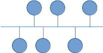
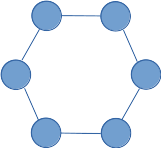
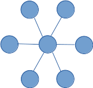
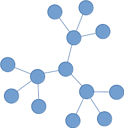
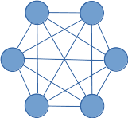
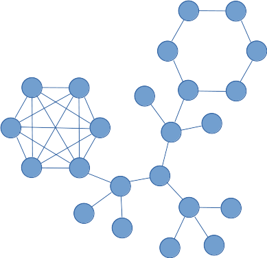

Topologías de red y modos de conexión#
Cuando hablamos de la topología física de una red nos referimos a la distribución del cable que interconecta a los diferentes ordenadores de la red.
Topología en bus#
Se caracteriza por tener un único canal de comunicaciones, llamado bus, al cual se conectas los diferentes dispositivos. El extremos del cable se terminan con una resistencia llamado terminador que además de indicar que no existen más ordenadores en el extremo, permiten cerrar el bus (evitan reflexiones)
Tiene como ventaja que es fácil de instalar y mantener y el principal inconveniente que si se rompe el cable por algún punto la red queda inoperativa por completo
Topología en anillo#
Cada estación esta conectada a la siguiente y la última está conectada a la primera, la principal des ventaja es que si un equipo o un cable deja de funcionar se paraliza toda la red.
Topología en estrella#
Todos los ordenadores están conectados a un punto central y todas las comunicaciones han de hacerse necesariamente a través de éste, la principal ventaja es que si un cable o un equipo deja de funcionar el resto de la red no se ve afectada, sin embargo si el nodo centrar falta, toda la red se desconecta.
Topología en estrella extendida o árbol#
Es como la topología de estrella en la que las redes se conectan entre sí
Topología en malla#
Cada nodo tiene sus propias conexiones con los demás nodos, como se puede ver necesitamos N(N-1)/2 conexiones, estas redes se dan en sitios en los que no puede existir ninguna interrupción, como por ejemplo una central nuclear
Necesitaremos N(N-1)/2 conexiones
Topología mixta o híbrida#
Las redes pueden utilizar diversas topologías para conectarse. Ejemplos de topologías mixtas: en árbol, estrella-estrella, bus-estrella, etc.
